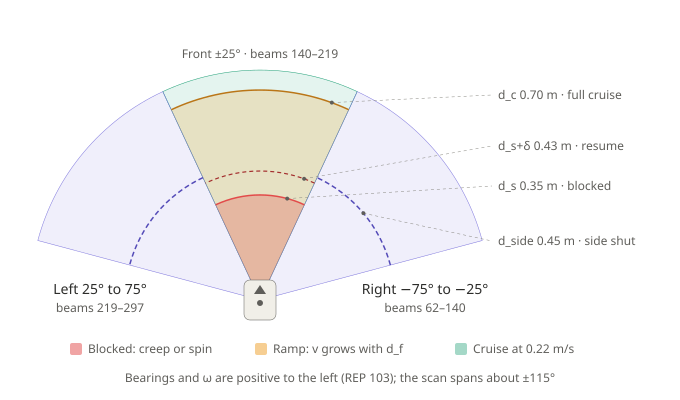
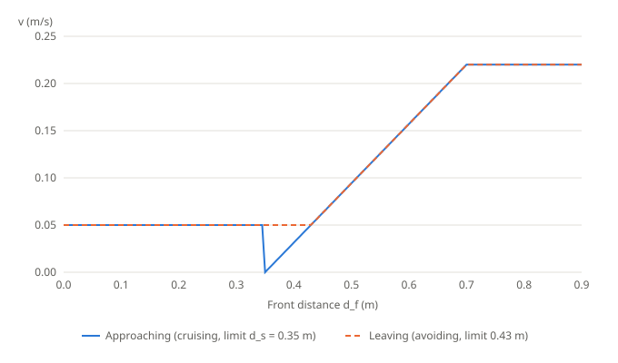
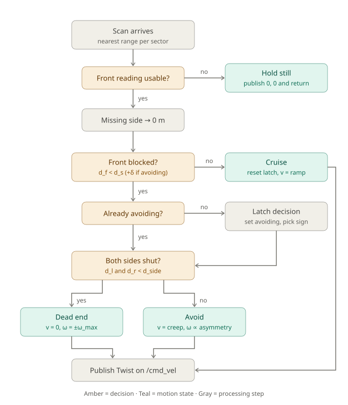

Reactive obstacle avoidance
Teaching visuals for workshop task 4 (reactive_avoid_SOLUTION.py). All values use the default node parameters.
Sector geometry and distance thresholds
The scan is split into three wedges. d_s, d_s+δ and d_c apply to the front; d_side applies to the two sides.

Speed law and hysteresis
Below the blocked limit the robot creeps at 0.05 m/s; above it, speed ramps from 0 at 0.35 m to 0.22 m/s at 0.70 m. The limit is 0.35 m while cruising and 0.43 m while avoiding.

Decision flow of on_scan

Simulator
Each slider movement counts as one new scan, so the latch and hysteresis persist between moves. Try "Wall ahead", then drag the front slider slowly from 0.30 to 0.45. The blue line is the predicted path over the next 2 seconds.
State
CRUISE
v (m/s)
0
ω (rad/s)
0
Turn sign
0
Front limit
0.35
Asymmetry A
0